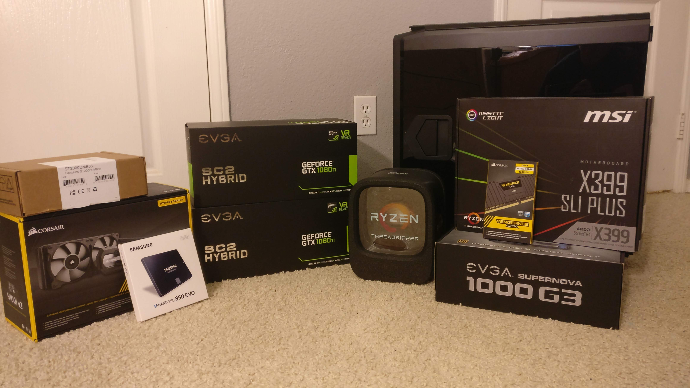
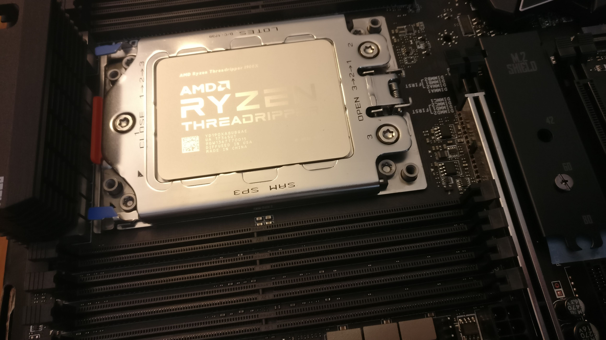
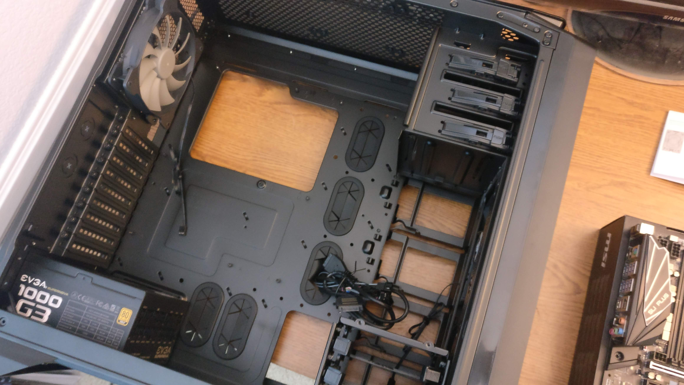
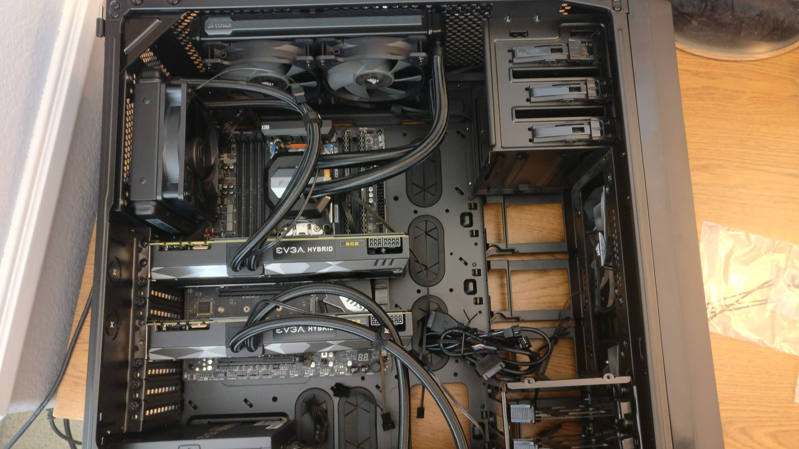
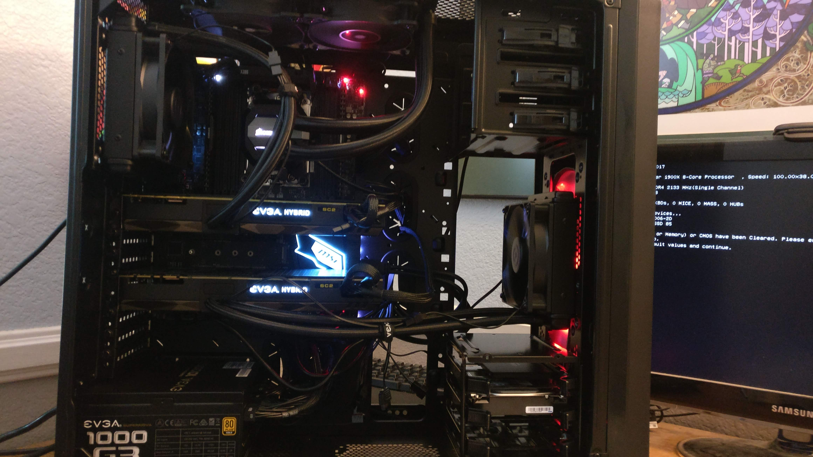

A few things to note
I wrote this article in late 2018 and am updating it just now. The hardware choices will be a little outdated (though still a good choice for building your first dl-rig), however all of the software/installation steps have been updated.
This article is intended to focus more on the server setup and working with multiple users at the same time, with the part assembly and software installation process being a simplified version of Slav Ivanov’s article on creating your own DL Box.
Intro
I had just started going through part 1 of fast.ai’s course, “Practical Deep Learning for Coders”, and I wanted to build my own server to train models as an upgrade from using an AWS p2 instance and storage. Realizing that I’d be using much larger data sets and not wanting to wait hours to train my models with the lack of adequate processing power, building my own DL rig was a good choice as it would save me a lot of time and money in the long run, as well as giving me good experience with putting a server together.
The Build
Creating the Parts List
Before putting any list of parts together, you need to decide on what you actually want out of your machine. For me, I wanted the following:
- More powerful than an Amazon p2/p3 instance
- Room to add additional GPUs, RAM, storage, and custom liquid cooling
- Hardware that’s not going out of date for many years
- Fitting cost into a $3,000ish budget (cheaper now as these are older parts)
I used pcpartpicker.com to spec everything out because of how easy it makes comparing other parts and organizing everything, along with their pretty good part compatibility checker (more on this later). I’ll go into detail on why I chose each part and how it works together with the system as a whole. For reference, the link to my server build can be found here.
GPU: GTX 1080 Ti Hybrid
This is the most important part in your build as you’re using your graphics card(s) to train models, so the more powerful your GPU, the faster you can work with massive datasets. A higher GPU memory equates to higher processing power (e.g., faster training, bigger batch sizes, etc…). I picked two of these cards for my server because I had room in my budget for them, and it allowed me to train my models on one of the cards and have another user train theirs on the second card. You can scale down the type of GPU you buy to fit into your budget (1070, 1060, etc.) along with preventing bottlenecking with your other parts. The Hybrid 1080 GPUs are also nice because they come with a preassembled aio water cooling system in addition to the normal fan cooling that the majority of GPUs have. 1080 Ti’s run hot when under full load, so having quality cooling is a necessity to prolong the life of your cards and retain their performance as you’re training models. For more on choosing choosing a graphics card, this article had really helped me really understand what choices to make in regards to working in a Deep Learning environment.
CPU: AMD Threadripper 1900x
While you’re using your graphics card to train your neural networks, your CPU is still important as it’s used for operations such as data preparation, so those high core counts are going to help speed things up. I went with using the Treadripper as it’s a very new CPU on the market with very high core counts (32 cores with the TR2’s!) and their price is much lower than their intel counterparts. The 1900x is the lowest tier of the 1st get TR with only 8 cores, though my whole goal for this server is to keep it very upgradable.
One thing to note is that when you’re choosing a CPU, make sure you have 8 or 16 pcie slots available for your graphics cards, as that’s when they perform best under load or you risk bottlenecking your system. On higher end CPUs, you’re pretty much guaranteed enough pcie slots if you had 4 graphics cards in your server.
Motherboard: MSI X399 SLI Plus
Opted for this board as it’s a full ATX board with room for 4 gpus, along with a max of 128GB of RAM. As I said earlier, one of the main goals for this server is to keep it very upgradable.
Memory: 32GB Corsair Vengeance LPX DDR4 (2 x 16GB)
More memory makes working with big datasets easier. The next thing I plan on upgrading is adding another 2 sticks of 16GB RAM, which is why I didn’t get quad channel ram (4 x 8GB sticks) even though it would make my performance a bit higher.
Storage: 256GB Samsung SSD & 2TB HDD
I put Ubuntu, all my libraries, and the current datasat I’m working with on the SSD, and all of the other data I have stored on the the 2TB mechanical Hard Drive.
Cooler: Corsair H100i v2 Liquid Cooler
Threadrippers don’t come with a stock cooler (and you should pretty much always upgrade to at least a cheap aftermarket cooler if you’ve got $30 to spare) so I wanted something that was reliable for 24/7 use, cheap, and easy to maintenance. This all-in-one cooler was super easy to install and very reliable (there are maybe 1 or 2 cases out of hundreds of thousands of units that happen to leak coolant), and it’s dead silent.
Power Supply: EVGA SuperNOVA 1000w 80+ Gold Certified
Always get a PSU with more wattage than you technically need. PCPartpicker’s wattage calculator is nice to get a general idea of how much you’ll be pulling (in my case 824w), though it’s often times inaccurate by varying amounts so it’s best to play it safe to prevent your computer from not turning on. The “Gold Certified” is just referring to how efficient the PSU is (how much power is wasted as heat).
Case: Corsair 760T Full Tower
I got this case because of how much space there is inside it and for its price. While it doesn’t make your models train faster, the clear side panel and red LEDs do make you look a lot cooler.

A year’s worth of rigorous saving and graduation money in one picture
Putting the Parts Together
If you’re new to building computers, it’s a lot like putting together a really expensive Lego set. Anyone can do it as it much harder to mess things up than you think. I’ll quickly cover putting together my build, though I highly suggest following along a video of a full build as you’re putting your own together, like this one! These instructions apply to pretty much any combination of parts you’re working with, as does the video guide I linked above.
Step 1: Installing the CPU

This is probably the scariest part of building your computer as there’s a specific order of steps you have to follow and a couple easy things you could accidentally do to immediately destroy a ~$430 cpu (like smashing a single cpu pin). It’s easy though, just make sure you watch a video of someone putting in one beforehand so you know what to expect. For the Threadripper, the installation process is a bit different, as on most motherboards you don’t “bolt down” the processor but have a single lever instead.
 Photo credit to Slav Ivanov
Photo credit to Slav Ivanov
Step 2: Installing the Power Supply

There’s no right or wrong order to doing things, though from my own personal experience I like to have the PSU be the first part I put into the case due to some cases requiring you to slide the PSU into a slot that would cause you to travel “through the motherboard” if it were there.
Step 3: Putting Everything Else Together

It’s a big jump in steps, but once the motherboard was in everything else was pretty easy to install. I’ll run though the order of installation:
- Installing the RAM. It’s very easy, just slide in your memory sticks in the right orientation and right slots on your mobo (see your manual as there are specific slots to use depending on how many sticks you have).
- Installing the CPU Cooler. The only minor inconvenience I had was having to replace the mounting bracket so that it was compatible with a TR, it just required a lot of force to change. It took 8 bolts to mount the radiator and I was done.
- Installing the Graphics Cards. Just slide them into their respective slots in your mobo (like memory, see your manual for which slots to put your card(s) into) and bolt on the radiators into your case. Make sure your radiators are above your gpu. I made that mistake in the above picture and had to remount it on the front panel of the case.
- Installing your Storage. I removed one of the drive bays to get more airflow, so I put my SSD and HDD together in the single drive bay in the bottom right.
Step 4: Success?

Time to turn your machine on. At first mine didn’t because I had the positive and negative cables for my case’s power button reversed, but after that I got to see the bright white and red glow I was hoping for. If all goes well you should see your computer post and then search for a boot device.
Setting up the Server
Installing the OS
The next step is to install your OS. I’m using Linux since that’s what most DL frameworks are designed for. I went with Ubuntu Desktop v16.04 LTS and installed everything from a USB drive. There are a lot of free tools like UNetbootin or Rufus (Windows only) you can download to prepare your thumb drive. Here’s a helpful tutorial going through the full process of creating a bootable USB on a Mac and this one if you’re using Windows.
Setting up SSH
Step 1: Port Forwarding
You’ll have to go through a similar process with all routers, but since I have an apple router I followed through this guide do the following: 1. Set a static IP for your server so that it doesn’t change every time it shuts off. 2. Log into your router using Apple Airport Utility 3. Map the port for the server. You’ll need to find the MAC address of your server for this part, so see this guide for how to find it on Ubuntu.
Step 2: Creating a Dynamic IP Address
I used
When I want to connect to my server, I type in a command that looks like this:
ssh [my_username]@[my_ip] -L 8889:[dl-rig_static_ip]:8888
I have my server running on port 8888 and my jupyter notebooks on 8889 (the -L option redirects your specified local port to a different host & port). This is so that I can run notebooks locally on my machine for testing simultaneously with my server for training. If you don’t want this however, you can just type in everything before the -L part. I’ll explain how to change the port you run jupyter notebooks on in the next section.
Installing DL/ML Libraries
Now onto installing all of the libraries necessary for deep learning/machine learning. Depending on when you read this article, some of the steps may be simplfied or library versions changed for certain packages, so just be aware of that.
First we’ll make sure our system is up to date and install all of the basic tools that we'll need:
sudo apt-get update
sudo apt-get --assume-yes upgrade
sudo apt-get --assume-yes install tmux build-essential gcc g++ make binutils unzip
sudo apt-get --assume-yes install software-properties-common
sudo apt-get --assume-yes install git
The next step is downloading and installing all of the CUDA GPU drivers:
mkdir ~/downloads
cd ~/downloads
wget http://developer.download.nvidia.com/compute/cuda/repos/ubuntu1604/x86_64/cuda-repo-ubuntu1604_9.0.176-1_amd64.deb
sudo dpkg -i cuda-repo-ubuntu1604_9.0.176-1_amd64.deb
sudo apt-key adv --fetch-keys http://developer.download.nvidia.com/compute/cuda/repos/ubuntu1604/x86_64/7fa2af80.pub
sudo apt-get update
sudo apt-get -y install cuda
sudo apt-get --assume-yes upgrade
sudo apt-get --assume-yes autoremove
sudo apt-get install cuda-toolkit-9.0 cuda-command-line-tools-9-0
Now we’ll verify that we installed all of the CUDA stuff correctly:
sudo modprobe nvidia
nvcc --version
nvidia-smi
From here we’ll add CUDA (Nvidia Deep Learning api) to our PATH variable:
cat >> ~/.bashrc << 'EOF'
export PATH=/usr/local/cuda-9.0/bin${PATH:+:${PATH}}
export LD_LIBRARY_PATH=/usr/local/cuda-9.0/lib64\
${LD_LIBRARY_PATH:+:${LD_LIBRARY_PATH}}
EOF
source ~/.bashrc
After that the next step is to install the CuDNN libraries (needed in creating neural networks):
wget http://files.fast.ai/files/cudnn-9.1-linux-x64-v7.tgz
tar xf cudnn-9.1-linux-x64-v7.tgz
sudo cp cuda/include/*.* /usr/local/cuda/include/
sudo cp cuda/lib64/*.* /usr/local/cuda/lib64/
We’ll now install Anaconda for the current user:
wget "https://repo.continuum.io/archive/Anaconda3-5.0.1-Linux-x86_64.sh"
bash "Anaconda3-5.0.1-Linux-x86_64.sh" -b
cd ~
echo "export PATH=\"$HOME/anaconda3/bin:\$PATH\"" >> ~/.bashrc
export PATH="$HOME/anaconda3/bin:$PATH"
conda install -y bcolz
conda upgrade -y --all
Next, we’ll install Tensorflow and Keras:
pip install --ignore-installed --upgrade https://storage.googleapis.com/tensorflow/linux/gpu/tensorflow_gpu-1.8.0-cp36-cp36m-linux_x86_64.whl
pip install keras
mkdir ~/.keras
echo '{
"image_dim_ordering": "tf",
"epsilon": 1e-07,
"floatx": "float32",
"backend": "tensorflow"
}' > ~/.keras/keras.json
Next, we’ll install the Python dependencies for Fastai:
mkdir -p ~/development/_training/ml
cd ~/development/_training/ml
git clone https://github.com/fastai/fastai.git
cd fastai
conda env update
The following few sections will be configuring jupyter notebook:
# Leaving the next line uncommented will prompt you to provide a password to
# use with your jupyter notebook.
jupass=`python -c "from notebook.auth import passwd; print(passwd())"`
# To hardcode the password to 'jupyter' comment line above and uncomment the line below.
#jupass=sha1:85ff16c0f1a9:c296112bf7b82121f5ec73ef4c1b9305b9e538af
# create ssl cert for jupyter notebook
openssl req -x509 -nodes -days 365 -newkey rsa:1024 -keyout $HOME/mykey.key -out $HOME/mycert.pem -subj "/C=IE"
# configure notebook
echo "c.NotebookApp.certfile = u'/home/{user}/mycert.pem'" >> $HOME/.jupyter/jupyter_notebook_config.py
echo "c.NotebookApp.keyfile = u'/home/{user}/mykey.key'" >> $HOME/.jupyter/jupyter_notebook_config.py
echo "c.NotebookApp.password = u'"$jupass"'" >> $HOME/.jupyter/jupyter_notebook_config.py
echo "c.NotebookApp.ip = '*'" >> $HOME/.jupyter/jupyter_notebook_config.py
echo "c.NotebookApp.open_browser = False" >> $HOME/.jupyter/jupyter_notebook_config.py
To change the default port to run Jupyter notebooks on (port 8888), uncomment this line and enter in the desired port. This allows you to simultaneously run your notebooks on your server and locally, along with having multiple users use their notebooks while you use yours:
#echo "c.NotebookApp.port = 9999" >> $HOME/.jupyter/jupyter_notebook_config.py
Now we’ll configure tmux, a tool that lets us create multiple “panes” in a Terminal window as well as keeping programs running after we disconnect. Checkout this documentation as it helped me a lot in understanding all of tmux’s capabilities. It’s quite helpful as you can run your notebook in one pane, monitor your gpu usage in another, and have a linux terminal open in another pane:
pip install tmuxp
mkdir ~/.tmuxp
Next we’ll create the tmuxp config file that will set up our development environment in one command, without us having to configure our panes, launch jupyter notebook, etc. every time we want to work on something. For our fastai environment, we’ll start it with tmuxp load fastai. See this link on using tmuxp and here documents in bash scripts and this one for saving tmux sessions between server restarts. Anyways, here’s let’s configure our environment:
cat > $HOME/.tmuxp/fastai.yml <<tmuxp-config
session_name: fastai
windows:
- window_name: dev window
layout: main-vertical
options:
main-pane-width: 140
shell_command_before:
# run as a first command in all panes
- cd ~/development/_training/ml/fastai
- source activate fastai
panes:
- shell_command:
- clear
- shell_command:
- clear
- jupyter notebook
- shell_command:
- watch -n 0.5 nvidia-smi
Tmuxp-config
Because we don’t need them anymore, let’s delete the installation files:
cd ~/downloads
rm -rf cuda-repo-ubuntu1604_9.0.176-1_amd64.deb xf cudnn-9.1-linux-x64-v7.tgz Anaconda3-5.0.1-Linux-x86_64.sh
cd ~
And that’s it! As of writing this my server has been running 24/7 with no issues at all, completely silent and powering through training with ease. If you’ve got any questions, feel free to contact me via email, Twitter, or on Fastai Fourms and I’ll be more than happy to help!
Some more works I referenced:
- https://www.digitalocean.com/community/tutorials/how-to-set-up-ssh-keys--2
- https://towardsdatascience.com/building-your-own-deep-learning-box-47b918aea1eb
- https://medium.com/impactai/setting-up-a-deep-learning-machine-in-a-lazy-yet-quick-way-be2642318850